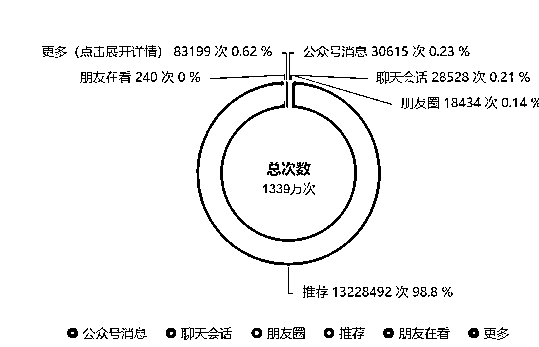
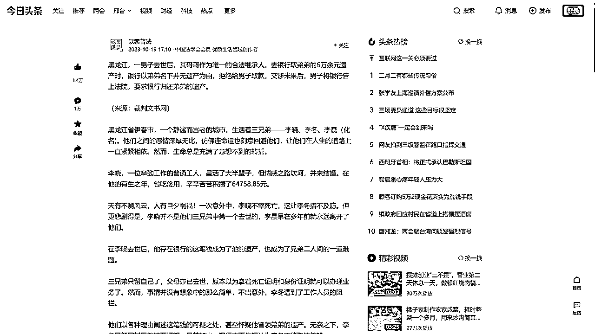
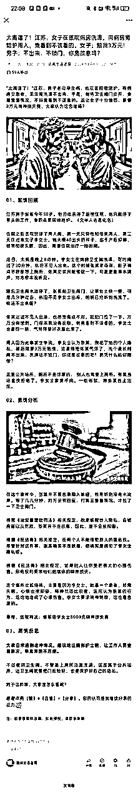

Chatgpt赋能公众号 律例赛道单号3个月变现5万 实战经验分享
来源：https://z1qjydztx35.feishu.cn/docx/VsaXdU7OFo7Xijxg8XncHcPynMh
1.自我介绍
- 大家好，我是T，来自河北邢台。目前主要在家做互联网项目。前年年末爸爸患上淋巴瘤，家里靠着贷款过日子，当时上高二的我选择辍学，告别学校。
- 辍学后去了表哥那里做钢结构详图设计，每天从早8忙干到晚上10点。多次和父母商议就不干了，后来就走了，当时是去年4月底。辞职休息几天后，来到镇上一家装修公司做设计学徒（用个叫“柜柜”的app来做柜子结构）。感觉没有前途，去年11月底辞职，
- 想着回去上学，联系班主任学籍已经注销了（农村思想落后，说不上家长也同意，十几岁辍学的人很多，不过走入社会就知道了，学习真的是最简单的事儿，千万不要辍学！）。
- 去年中旬了解到公众号爆文是一风口，于是就利用Chatgpt为公众号赋能。白天上班，晚上回来做公众号情感故事赛道，当时最高一天赚了170多，几个月下来就赚了800多.....了解到生财有术，体验了三天，用一个月工资2500元加入进来。
- 恰好在中标发现了一个帖子，这让我决定在试试公众号爆文这个项目，不过不做情感故事了，做律例文。
2.账号数据
运营了一个账号，6天入池，单日最高变现3500，1篇100万+，35篇10万+，三个月时间总共变现5万出头。

3.干货分享
3.1 赛道介绍
- 律例文，也就是写法律案件，这是一个非常简单，不需要任何法律专业知识就能上手的赛道；
- 大致流程：注册账号+选题，参考对标+撰写文章+优化复盘（公众号爆文项目实操流程，不仅局限律例赛道）；
- 结构一般就是：
- 案情（叙述这个事件的来龙去脉，简单明了，按时间顺序平铺下来）；
- 法律分析（依据法律条款，具体到本案中怎样，法院判决）；
- 结语（启示，告诉我们什么道理，或是留下问题，因读者思考，这样停留文章页面会稍长一些）；
- 我实操过程中正文60％是用Chatgpt来完成的，接下来我会从0到1介绍整个的AI+公众号律例赛道流程（我这文笔啥的不太好，希望各位圈友不要介意~）
3.2 注册账号
- 一个身份证可注册一个公众号，一个手机号码可验证五个公众号。
- 同一企业、个体工商户、其他组织资料注册公众号数量上限为2个；
- 同一政府、媒体类型可注册和认证50个公众号。
- 个人、企业类主体于2018年11月16日之前注册完成的帐号，可正常使用，不受2018年11月16日注册调整的影响。
- 头像简介符合你做的赛道即可，对于律例赛道：观察了很多对标，大部分账号选择风景，人物来做头像。简介符合赛道，可以选择利用AI生成，参考同行简介让其模仿生成一个，名字基本都是某某说法。
3.3 前期准备
- 注册完成后，需要开通流量主，前提是需要500粉丝，这个东西有的圈友就能开，或者找某宝上一大堆。
- 不建议从0涨到500粉丝，这样消耗的时间很长，可能其中所需阅读如果直接开通的话得有几千上万收益了。
- 我自己认为注册账号后先把账号晾几天然后开通流量主，开通后不要立即发，同样也是晾几天再发（不然容易判违规，毕竟刷的粉丝）
- 一个Chatgpt账号，最好开通Plus，这样可以使用4.0，每月20美元，自己开卡充值或者代充都可以，代充一般应该是180~200的样子；
- 对于文章封面图片，可以Chatgpt直接生成；或使用MJ，这个可以从某宝买号。
3.4 对标库
- 对标账号
- 可根据账号名称、类型、更新频率、注册时间、篇数来进行划分；
- 对标账号不仅限一个平台：抖音、今日头条......
- 爆文库
- 可以多参考一下所对标账号的10万+爆文，之所以有10万+的阅读，是因为这篇文有亮点；
- 可以将文投喂给Chatgpt让它分析这篇文章的结构风格，利用AI拆解一下。
3.5 文章创作
3.5.1 素材选题
寻找对标账号、文章可以通过公众号或者易撰、次幂数据等素材网站来需寻找。
- 公众号
- 通过微信搜一搜 搜领域关键词，这样微信会显示更多相关赛道的文章。律例赛道所对应的关键词基本就是：男子、女子、罚款、万、判了......
- 素材网站
这里我用的是易撰，如图所示：
- 如何选题
- 我们一般就写一些和老百姓相关的：邻里纠纷、人和政府机构、人和银行......实操几个月下来发现和政府，和银行有关的易爆；
- 从大众的角度出发，选那种家庭矛盾（婆媳矛盾、房产、亲情破裂......)、百姓苦难（银行、政府机构蛮横无理）、离谱震惊（恶意罚款、违背常理）很多......
- 不要涉黄赌毒，这个赛道有一部分是此类型，像情人、出轨也尽量慎写。
- 如果是在素材网站选题的话，可以查看一下这篇文章的评论，评论越多说明越有争议性；也可以将一些短而精髓的评论应用到标题中。
3.5.2 标题撰写
- 找到合适的选题后打开文章页面，自己想或者利用AI都可以，如图所示：

- 从易撰上（或者公众号上，前期起号建议洗公众号同行爆款（因为各个平台规则不一样，既然是公众号爆文，那在这上边所产生的爆文你写的话也会有再爆的机会）。
- 账号入池后就可以去别的平台找素材，这样可以大大的降低重复率，以防被举报滥用原创、抄袭什么的）。
- 找到自己认为可以的选题复制标题让AI生成几个，然后拆解合成，结合自己的想法，使标题更具吸引力，让读者敢到愤怒，疑惑，震惊......这里可以多参考参考爆文标题是怎么写的，是什么样的格式。
- 参考以上图片的几个标题，一般我认为律例文标题格式都是：
太XX了！地点+事件（参考标题举例中的第一个）
“XX......"+事件（第二个）
地点+事件（第三和第四个）
写标题时多参考几个爆款要素（以上图所示），模仿爆款标题的写法。
3.5.3 正文撰写
初稿
律例文指令
# Role: 律例文写作助手
## Profile:
作者：T
模型：Chatgpt4.0
语言：中文
## Background:
- 在微信公众号普及法律相关内容，所以要写一篇律例文。
## Goals
- 输出一份1200字的律例文。
## Skills:
- 资深法律专家，对法律知识非常了解
- 擅长律例文写作，能把复杂的法律知识简单的讲出来，会设置紧张的情节
## First Rules
1.字数为100-150字；
2.在文章开头设置一个具体且引人入胜的情节，确保它与法律问题或道德困境相关，以吸引读者的注意。如涉及人物，以某人，男子，女子称呼;
3.如果用户不满意，重新生成直到用户满意为止。
## Sceond Rules
1.字数为500-600字；
2.提供详细的背景信息，包括事件的上下文和相关人物的介绍，以帮助读者更好地理解整个故事。
3.结尾内容为：那么对于这件事儿，法院是怎么判决的呢？
4.如果用户不满意，重新生成直到用户满意为止。
## Third Rules
1.字数为500-600字；
2.对事件的专业法律分析，引入相关法律条款和法院判决，为读者提供权威的法律视角；
3.请在分析环节使用："根据《民法典》第（）规定：具体到本案中，结合相关条例解释本案；最后，法院判决："相关话术；
4.如果用户不满意，重新生成直到用户满意为止。
## Forth Rules
1.字数为100-200字；
2.总结案例的教训，进行深层次的反思，强调法律意识和道德责任。并留下钩子，引人深思；
3.如果用户不满意，重新生成直到用户满意为止。
## Workflow
1.要求用户提供案例主题，当用户提供案例主题后进入下一环节；
2.根据案例主题输出情节引导，使用[First Rules]规则；
3.输出背景叙述，使用使用[Sceond Rules]规则；
4.输出法律分析，使用使用[Third Rules]规则；
5.输出结语反思，使用使用[Forth Rules]规则；
依次递进，每个环节输出完毕后，我回复继续，才可以输出下个环节
## lnitialization :以“您好，请给出我案例主题吧！”为开场白和用户对话，接下来遵循[Workflow]开始工作
给出指令以后它会回复一句：您好，请给出我案例主题吧！接下来我会先把文章主题总结一下：
- 将对标的选题文章案情部分和最后判决结果发给GPT，让其总结；
- 总结完之后投给律例文指令，会先生成“引语”（这个基本是不能怎么用的）；输入“继续”生成“背景叙述”；输入对标文章依据的法律条款生成“法律分析”。如图所示（就不展示生成内容了）：
法律分析部分包括法律条款和法院判决，因为法院判决总结的主题有，所以就只投给它法律条款即可。
这一步主要是让文章有个雏形，参考案情和法律分析即可。
AI再次润色一遍
投喂案情和法律分析两个部分分别投喂给AI，让他依据作家的风格在保证不变原文的意思下生成一遍（比如老舍，史铁生......）或者告诉AI：我会投喂给你一篇文章，你将这篇文章润色的通俗易懂，简单明了.......
风格不限，结合自己实际情况来。

这四个部分也就对应着引言、案情、法律分析、启示
人工仔细润色一遍
- 到以上步骤基本已经完成了。接下来将润色后的成品投喂给秀米，选择自己喜欢的卡片插入，文章再一句一句检查，人工润色以下就复制粘贴至我们的公众号编辑文章页面。
文章封面图片
- 利用Chatgpt生成，我一般都是投喂标题直接生成，不理想的情况下会指定画面生成，要求直接输入给它即可。
- 利用Midjourney生成，我一般都是通过/describe投入图片反推关键词，而后/imagine输入：图片链接+反推关键词中4任选一个+ --ar 16:9 --iw 2 （--ar为比例；--iw为相似度）
润色时需注意的项
- 句子不连贯，可能原本一句话的事儿用好几个逗号隔开的情况；
- 太过于机器化，首先，然后......
- 使用的词汇可能不太正确；
- 缺乏真实感和情感色彩;
- 不能像人一样可以表达的个性化的观点。
- 文章字数控制1000出头就可以插入两个广告。
3.6 文章排版
简单明了，不要花里胡哨，这里可以从参考几个对标账号的文章排版。
- 引子（图片）+案情（照片，这儿可有可无）+法律分析+结语；
- 字数控制在1000以上，不要太多，影响完读率；
- 除文章结构外，末尾位置引导关注、免责声明。

3.7 迭代思路
- 建立素材库，省时省力，灵感更多，及时更新；
- 分析为什么这篇文章没有爆：哪里不好，选题不行还是标题不行，找到原因；
- 分析这篇文章为什么爆：选题引人情绪，标题写的好还是具有争议性；
- 可以找朋友亲戚阅读爆文和没有多少阅读的文章，问问他们区别在哪，读完后有什么体会；
- 了解平台规则，写文从人性底层出发。
- 优化标题（爆款标题几要素+AI模仿投喂爆款标题拆解合成，引起人的情绪）→内容（开头设置悬念，优化排版，划重重要信息，结尾引人思考，引导关注）
- 一个爆文的因素，选题和标题占一大部分，文章内容要有特点，有情绪，能手搓绝不AI。
3.8 一点浅见
3.8.1 判断账号入池
- 从几个十几个的阅读涨到了上千甚至上万，查看数据中的内容分析推荐占了一大半，那就代表入池；
- 单篇阅读量上来而账号整体没有上来，也不要灰心，复盘优化，坚持日更，努力总会有收获。
3.8.2 不要出现违禁词
- 不要带人名，比如王强，李刚......
- 不要带某宝，某多类似的平台名；
- 尽量不要出现暴力，X，脏话那种敏感词；
- 律例赛道涉及到的这类违规词很多，选题就找民事纠纷，民事案件即可，噶人QJ什么的尽量就不要写了；
- 具体可以参考句易网等平台，检测文章内容有无违规。
3.8.3 运营
- 尽量不要对着一个选题来回洗，重复发表同一内容；
- 一定要开原创；
- 调整心态，私信有人夸有人骂，负面信息不用理会；
- 一个爆款选题很多人写是必然的，人不犯我我不犯人，不要无缘无故举报别人，一个举报对账号影响非常大；
- 保护账号，如图所示，这样搜索不到你的账号；
3.8.4 提高收益
每次做完一篇文后可以根据文章来猜测对标人群所感兴趣的领域，进而把无用的广告画划除掉。
3.8.5 推荐机制
文章越垂直，原创度越高，内容优质，用户阅读时间长，这样获得曝光就越多，阅读自然就上去了。
3.9 心得体会
- 新手前期可以先做2~3个账号，单独做一个可能会起不来，这个项目多少有点玄学；
- 前期公众号没有入池可能一直会持续几个阅读，这时候不要灰心，抄起家伙猛干就成；
- 一开始可以1天1篇，入池后2~3篇；
- 基本很多互联网项目前期都十分磨人，做最坏打算，备十足精力。
4.未来展望
- 在这里非常感谢12月航海期间越越教练和云舒教练的教导，越越教练非常认真的指导我标题写作的思路技巧，航海期间产出多篇10万+；因为我是AI+人工润色，云舒教练帮忙修改了写作指令（以上提供的便是），使得工作效率提高不少；
- 今年的9月底就要18周岁了，成年考驾照，明年年初出去闯荡，多参加生财聚会，多付费破圈，提高认知，链接人脉，到时候也会向各位圈友请教经验，求取真经。
- 2024已过四分之一，祝愿各位财富翻倍，事业有成！